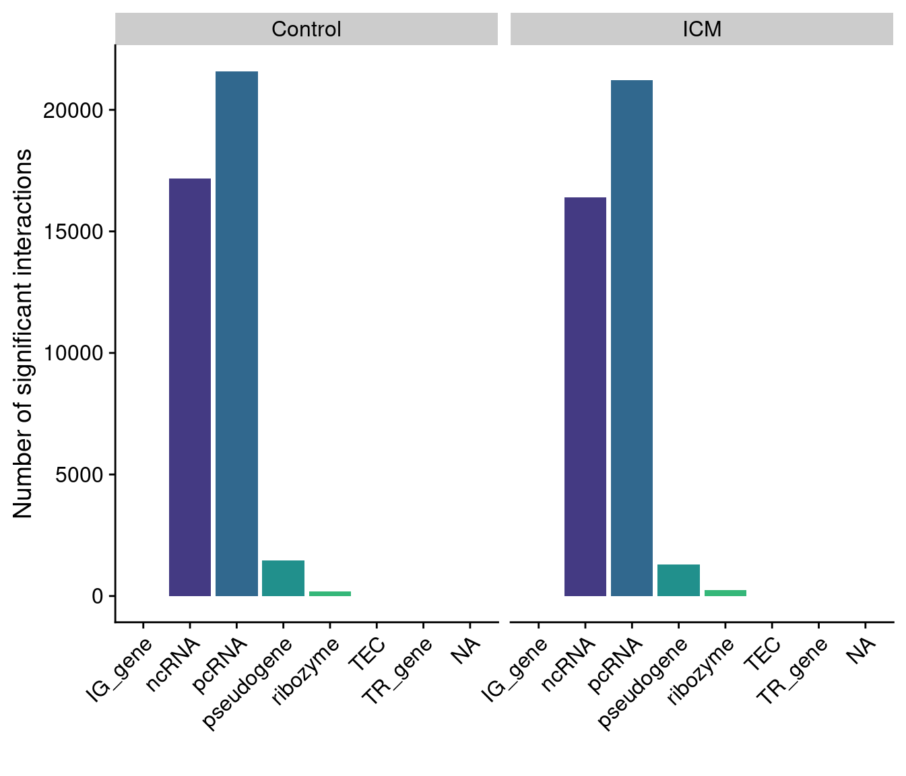

Analysis of MeDip-Seq data
Shashank Tiwari
Most recent update:
2023-07-12
#root.dir <- here::here()
knitr::opts_chunk$set(
collapse = TRUE,
comment = "#>",
#root.dir = root.dir
fig.height = 6,
fig.width = 7.00787 #178mm
)
knitr::opts_knit$set(#root.dir = "~/Radicl_Seq/Radicl_seq_functions/",
dpi = 350)
library(data.table)
library(ggplot2)
library(tidyverse)## Warning: package 'stringr' was built under R version 4.2.2library(cowplot)
library(Rsamtools)## Warning: package 'BiocGenerics' was built under R version 4.2.1library(rtracklayer)## Warning: package 'rtracklayer' was built under R version 4.2.2library(viridis)## Warning: package 'viridisLite' was built under R version 4.2.1library(dplyr)
library(genomation)## Warning: replacing previous import 'Biostrings::pattern' by 'grid::pattern'
## when loading 'genomation'library(biomaRt)
library(GenomicRanges)
library(DT)
library(magick)
library(patchwork)
library(slickR)
library(svglite)
library(scales)
library(reticulate)
library(bedtoolsr)## Warning in value[[3L]](cond): bedtools does not appear to be installed or not in your PATH. If it is installed, please add it to your PATH or run:
## options(bedtools.path = "/path/to/")#library(ggpubr)#> used (Mb) gc trigger (Mb) max used (Mb)
#> Ncells 10550015 563.5 16736215 893.9 11460993 612.1
#> Vcells 803487402 6130.2 1054181735 8042.8 803550831 6130.7
#> trans cis bait.to.bait
#> "73%" "27%" "16%"
#> trans cis bait.to.bait
#> "67%" "33%" "2%"
#> trans cis bait.to.bait
#> "77%" "23%" "17%"
#> trans cis bait.to.bait
#> "71%" "29%" "1%"
#> trans cis bait.to.bait
#> "72%" "28%" "15%"
#> trans cis bait.to.bait
#> "66%" "34%" "2%"
#> trans cis bait.to.bait
#> "73%" "27%" "3%"
#> trans cis bait.to.bait
#> "70%" "30%" "2%"sktech = htmltools::withTags(table(
class = 'display',
thead(
tr(
th(rowspan = 2, 'Type'),
th(colspan = 5, 'All'),
th(colspan = 5, 'Significant')
),
tr(
lapply( rep(c("Ctrl Coding", "Ctrl NonCoding","ICM Coding","ICM NonCoding"),2), th)
)
)
))
DT::datatable(qc_df, container = sktech, rownames = TRUE,options = list(scrollX=TRUE))Preprocessing
#read in the data
control_coding$type <- as.factor("Control Coding")
control_nc$type <- as.factor("Control NonCoding")
ICM_coding$type <- as.factor("ICM Coding")
ICM_nc$type <- as.factor("ICM NonCoding")
merged_runs <- rbind(control_coding, control_nc,
ICM_coding,ICM_nc)
merged_runs$signif <- ifelse(merged_runs$q.value<0.05, "significant","non-significant")
merged_runs$frag.length <- merged_runs$target.end-merged_runs$target.start
merged_runs$bait.length <- merged_runs$bait.end-merged_runs$bait.start
#make bins split res by qvalue bins
merged_runs <- merged_runs[!is.na(merged_runs$q.value),]
merged_runs[,q_bin:=cut(q.value, breaks=c(0,0.05,0.2,0.4,0.6,0.8,1),include.lowest=TRUE),]
merged_stretch_cis <- merged_runs[!is.na(distance),.(count2=1:count),names(merged_runs)]
#get gene names
baits_coding <- fread("~/Radicl_Seq/coding_genes_no_ovrlps.bed")
colnames(baits_coding) <- c("chr","start","end","bait_name")
baits_coding$chr <- sub("^","chr", baits_coding$chr)
baits_noncoding <- fread("~/Radicl_Seq/non_coding_genes_no_ovrlps.bed")
colnames(baits_noncoding) <- c("chr","start","end","bait_name")
baits_noncoding$chr <- sub("^","chr",baits_noncoding$chr)
baits <- rbind(baits_coding, baits_noncoding)#> used (Mb) gc trigger (Mb) max used (Mb)
#> Ncells 10642417 568.4 16736215 893.9 16736215 893.9
#> Vcells 1195628266 9122.0 3232766879 24664.1 2881604059 21984.9Relationship between RNA length and detected interactions
merged_runs[,bait_name := baits$bait_name[match(merged_runs$bait.start,baits$start)]]
merged_runs_non_b2b <- merged_runs[bait.to.bait==FALSE]
merged_runs_b2b <- merged_runs[bait.to.bait==TRUE]
setorder(merged_runs_non_b2b,q.value)
#make correlation test
cor.test(merged_runs_non_b2b$bait.length,merged_runs_non_b2b$q.value,
method="spearman", exact = F)
#>
#> Spearman's rank correlation rho
#>
#> data: merged_runs_non_b2b$bait.length and merged_runs_non_b2b$q.value
#> S = 2.05e+22, p-value < 2.2e-16
#> alternative hypothesis: true rho is not equal to 0
#> sample estimates:
#> rho
#> 0.01658304
cor.test(merged_runs_non_b2b$bait.length, merged_runs_non_b2b$count,
method="spearman", exact = F)
#>
#> Spearman's rank correlation rho
#>
#> data: merged_runs_non_b2b$bait.length and merged_runs_non_b2b$count
#> S = 2.0278e+22, p-value < 2.2e-16
#> alternative hypothesis: true rho is not equal to 0
#> sample estimates:
#> rho
#> 0.02724338
nrow(merged_runs_non_b2b[frag.length==1999])/nrow(merged_runs_non_b2b)
#> [1] 3.701272e-05
cor.test(merged_runs_non_b2b$frag.length, merged_runs_non_b2b$count,
method="spearman",exact = F)
#>
#> Spearman's rank correlation rho
#>
#> data: merged_runs_non_b2b$frag.length and merged_runs_non_b2b$count
#> S = 2.0889e+22, p-value < 2.2e-16
#> alternative hypothesis: true rho is not equal to 0
#> sample estimates:
#> rho
#> -0.002075754
cor.test(merged_runs_non_b2b$frag.length, merged_runs_non_b2b$q.value,
method="spearman",exact=F)
#>
#> Spearman's rank correlation rho
#>
#> data: merged_runs_non_b2b$frag.length and merged_runs_non_b2b$q.value
#> S = 2.0836e+22, p-value = 0.0006038
#> alternative hypothesis: true rho is not equal to 0
#> sample estimates:
#> rho
#> 0.0004850166
cor.test(merged_runs_non_b2b[frag.length!=1999]$frag.length,
merged_runs_non_b2b[frag.length!=1999]$count,
method="spearman",exact=F)
#>
#> Spearman's rank correlation rho
#>
#> data: merged_runs_non_b2b[frag.length != 1999]$frag.length and merged_runs_non_b2b[frag.length != 1999]$count
#> S = 2.0884e+22, p-value < 2.2e-16
#> alternative hypothesis: true rho is not equal to 0
#> sample estimates:
#> rho
#> -0.001969395
cor.test(merged_runs_non_b2b[frag.length!=1999]$frag.length,
merged_runs_non_b2b[frag.length!=1999]$q.value,
method="spearman",exact=F)
#>
#> Spearman's rank correlation rho
#>
#> data: merged_runs_non_b2b[frag.length != 1999]$frag.length and merged_runs_non_b2b[frag.length != 1999]$q.value
#> S = 2.0833e+22, p-value = 0.0004415
#> alternative hypothesis: true rho is not equal to 0
#> sample estimates:
#> rho
#> 0.0004969066
#check bait to bait
cor.test(merged_runs_b2b$frag.length, merged_runs_b2b$q.value,
method="spearman",exact=F)
#>
#> Spearman's rank correlation rho
#>
#> data: merged_runs_b2b$frag.length and merged_runs_b2b$q.value
#> S = 1.7764e+19, p-value < 2.2e-16
#> alternative hypothesis: true rho is not equal to 0
#> sample estimates:
#> rho
#> 0.009396152
cor.test(merged_runs_b2b$frag.length, merged_runs_b2b$count,
method="spearman",exact=F)
#>
#> Spearman's rank correlation rho
#>
#> data: merged_runs_b2b$frag.length and merged_runs_b2b$count
#> S = 1.7734e+19, p-value < 2.2e-16
#> alternative hypothesis: true rho is not equal to 0
#> sample estimates:
#> rho
#> 0.01108874
#check non-b2b without cis
cor.test(merged_runs_non_b2b[target.chr==bait.chr]$bait.length,
merged_runs_non_b2b[target.chr==bait.chr]$q.value,
method="spearman",exact=F)
#>
#> Spearman's rank correlation rho
#>
#> data: merged_runs_non_b2b[target.chr == bait.chr]$bait.length and merged_runs_non_b2b[target.chr == bait.chr]$q.value
#> S = 4.3059e+20, p-value < 2.2e-16
#> alternative hypothesis: true rho is not equal to 0
#> sample estimates:
#> rho
#> 0.01492415
cor.test(merged_runs_non_b2b[target.chr==bait.chr]$bait.length,
merged_runs_non_b2b[target.chr==bait.chr]$count,
method="spearman",exact=F)
#>
#> Spearman's rank correlation rho
#>
#> data: merged_runs_non_b2b[target.chr == bait.chr]$bait.length and merged_runs_non_b2b[target.chr == bait.chr]$count
#> S = 4.2591e+20, p-value < 2.2e-16
#> alternative hypothesis: true rho is not equal to 0
#> sample estimates:
#> rho
#> 0.0256511
#raw pvalue
cor.test(merged_runs_non_b2b[frag.length!=1999]$frag.length,
merged_runs_non_b2b[frag.length!=1999]$p.value,
method="spearman",exact=F)
#>
#> Spearman's rank correlation rho
#>
#> data: merged_runs_non_b2b[frag.length != 1999]$frag.length and merged_runs_non_b2b[frag.length != 1999]$p.value
#> S = 2.0837e+22, p-value = 0.02153
#> alternative hypothesis: true rho is not equal to 0
#> sample estimates:
#> rho
#> 0.0003250403
cor.test(merged_runs_non_b2b$frag.length,merged_runs_non_b2b$p.value,
method="spearman",exact=F)
#>
#> Spearman's rank correlation rho
#>
#> data: merged_runs_non_b2b$frag.length and merged_runs_non_b2b$p.value
#> S = 2.0839e+22, p-value = 0.03068
#> alternative hypothesis: true rho is not equal to 0
#> sample estimates:
#> rho
#> 0.0003056158
#summarised counts per fragment
bait_count <- merged_runs_non_b2b[,sum(count),by=.(bait.id,bait.length)]
merged_runs_sum_non_b2b <-
cor.test(bait_count$bait.length,bait_count$V1,
method="spearman",exact=F)
frag_count <- merged_runs_non_b2b[,sum(count),by=.(target.id,frag.length)]
cor.test(frag_count$frag.length,frag_count$V1,
method="spearman",exact=F)
#>
#> Spearman's rank correlation rho
#>
#> data: frag_count$frag.length and frag_count$V1
#> S = 1.7632e+17, p-value < 2.2e-16
#> alternative hypothesis: true rho is not equal to 0
#> sample estimates:
#> rho
#> 0.0966443
#bait to bait interactions
bait_count2 <- merged_runs_b2b[,sum(count),by=.(bait.id,bait.length)]
merged_run_sum_frag_b2b <-
cor.test(bait_count2$bait.length,bait_count2$V1,
method="spearman",exact=F)
#Print summarized counts by bait where it wasnt bait to bait
print(merged_runs_sum_non_b2b)
#>
#> Spearman's rank correlation rho
#>
#> data: bait_count$bait.length and bait_count$V1
#> S = 4.3434e+12, p-value < 2.2e-16
#> alternative hypothesis: true rho is not equal to 0
#> sample estimates:
#> rho
#> 0.6670276
#Print summ counts by bait where it is bait to bait
print(merged_run_sum_frag_b2b)
#>
#> Spearman's rank correlation rho
#>
#> data: bait_count2$bait.length and bait_count2$V1
#> S = 1.6347e+12, p-value < 2.2e-16
#> alternative hypothesis: true rho is not equal to 0
#> sample estimates:
#> rho
#> 0.6688893Trying wilcoxons test
#non bait to bait
non_b2b_bait_wt <-
wilcox.test(merged_runs_non_b2b[q.value<0.05]$bait.length,
merged_runs_non_b2b[q.value>=0.05]$bait.length,
alternative="greater")
non_b2b_frag_wt <-
wilcox.test(merged_runs_non_b2b[q.value<0.05]$frag.length,
merged_runs_non_b2b[q.value>=0.05]$frag.length,
alternative="greater")
##bait to bait
b2b_bait_wt <-
wilcox.test(merged_runs_b2b[q.value<0.05]$bait.length,
merged_runs_b2b[q.value>=0.05]$bait.length,
alternative="greater")
b2b_frag_wt <-
wilcox.test(merged_runs_b2b[q.value<0.05]$frag.length,
merged_runs_b2b[q.value>=0.05]$frag.length,
alternative="greater")
print(non_b2b_bait_wt)
#>
#> Wilcoxon rank sum test with continuity correction
#>
#> data: merged_runs_non_b2b[q.value < 0.05]$bait.length and merged_runs_non_b2b[q.value >= 0.05]$bait.length
#> W = 1.464e+12, p-value = 1
#> alternative hypothesis: true location shift is greater than 0
print(non_b2b_frag_wt)
#>
#> Wilcoxon rank sum test with continuity correction
#>
#> data: merged_runs_non_b2b[q.value < 0.05]$frag.length and merged_runs_non_b2b[q.value >= 0.05]$frag.length
#> W = 1.7498e+12, p-value = 0.9505
#> alternative hypothesis: true location shift is greater than 0
print(b2b_bait_wt)
#>
#> Wilcoxon rank sum test with continuity correction
#>
#> data: merged_runs_b2b[q.value < 0.05]$bait.length and merged_runs_b2b[q.value >= 0.05]$bait.length
#> W = 9051619314, p-value = 1
#> alternative hypothesis: true location shift is greater than 0
print(b2b_frag_wt)
#>
#> Wilcoxon rank sum test with continuity correction
#>
#> data: merged_runs_b2b[q.value < 0.05]$frag.length and merged_runs_b2b[q.value >= 0.05]$frag.length
#> W = 9.399e+09, p-value = 1
#> alternative hypothesis: true location shift is greater than 0Show the plot and results
plt_non_b2b_frag <-
ggplot(merged_runs_non_b2b,
aes(x=signif,y=log(frag.length,base = 10),fill=signif))+
geom_violin(trim = FALSE,outlier.shape=NA)+
geom_boxplot(width=0.1, outlier.shape = NA)+
theme_cowplot()+
scale_fill_viridis(discrete = T,alpha = 0.5)+
theme(legend.position="none")+
ylab("Log 10 length")+
xlab("Significant Interaction")+
ggtitle("Fragment length Non-bait-to-bait interactions")+
theme(plot.title = element_text(size=10))+
coord_cartesian(ylim = quantile(log(merged_runs_non_b2b$frag.length,base = 10),
c(0.1,0.9)))
#> Warning in geom_violin(trim = FALSE, outlier.shape = NA): Ignoring unknown
#> parameters: `outlier.shape`
plt_non_b2b_bait <-
ggplot(merged_runs_non_b2b,
aes(x=signif,y=log(bait.length,base=10),fill=signif))+
geom_violin(trim = FALSE,outlier.shape=NA)+
geom_boxplot(width=0.1,outlier.shape = NA)+
theme_cowplot()+
scale_fill_viridis(discrete = T,alpha = 0.5)+
theme(legend.position = "none")+
ylab("Log 10 Length") +
xlab("Significant Interaction")+
ggtitle("Bait length non-bait-to-bait interactions")+
theme(plot.title = element_text(size=10))
#> Warning in geom_violin(trim = FALSE, outlier.shape = NA): Ignoring unknown
#> parameters: `outlier.shape`
plt_b2b_frag <-
ggplot(merged_runs_b2b,
aes(x=signif,y=log(frag.length,base = 10),fill=signif))+
geom_violin(trim = FALSE,outlier.shape=NA)+
geom_boxplot(width=0.1,outlier.shape = NA)+
theme_cowplot()+
scale_fill_viridis(discrete = T,alpha=0.5)+
theme(legend.position = "none")+
ylab("Log 10 Length")+
xlab("Significant Interaction")+
ggtitle("Fragment Length Bait-to-bait interactions")+
theme(plot.title = element_text(size = 10))
#> Warning in geom_violin(trim = FALSE, outlier.shape = NA): Ignoring unknown
#> parameters: `outlier.shape`
plt_b2b_bait <-
ggplot(merged_runs_b2b,
aes(x=signif,y=log(bait.length,base = 10),fill=signif))+
geom_violin(trim = FALSE,outlier.shape=NA)+
geom_boxplot(width=0.1,outlier.shape = NA)+
theme_cowplot()+
scale_fill_viridis(discrete = T,alpha = 0.5)+
theme(legend.position = "none")+
ylab("Log 10 Length")+
xlab("Significant Interactions")+
ggtitle("Bait length bait-to-bait interactions")+
theme(plot.title = element_text(size=10))
#> Warning in geom_violin(trim = FALSE, outlier.shape = NA): Ignoring unknown
#> parameters: `outlier.shape`
gridExtra::grid.arrange(plt_non_b2b_frag,plt_non_b2b_bait,
plt_b2b_frag,plt_b2b_bait,ncol=2)Distance of interactions from Transcriptional start site
ggplot(merged_stretch_cis, aes(log(distance,base=10))) +
geom_density(alpha = 0.1)+theme_cowplot()+
scale_fill_viridis(name="Adj. P-value Bin",discrete=T)+
scale_colour_viridis(name="Adj. P-value Bin",discrete=T)+
geom_vline(xintercept=log(24000000,base=10), colour="grey") +
geom_vline(xintercept=log(500000,base=10), colour="grey") +
annotate(x=log(24000000,base=10),y=2,label="24Mb",vjust=2,geom="label")+
annotate(x=log(500000,base=10),y=2,label="500Kb",vjust=2,geom="label")+
xlab("Log 10 Distance from Interaction to RNA")+
facet_wrap(~type)Split the plot according to the Replicate type and next according to the p value
ggplot(merged_stretch_cis,aes(log(distance,base = 10),
fill=q_bin,colour=q_bin))+
geom_density(alpha=0.1) + theme_cowplot() +
facet_wrap(~type)+
scale_fill_viridis(name="Adj P-value bin", discrete=T)+
scale_colour_viridis(name="Adj P-value bin", discrete=T)+
geom_vline(xintercept = log(24000000,base = 10), colour="grey")+
geom_vline(xintercept = log(500000,base = 10), colour="grey") +
annotate(x=log(24000000,base = 10), y=2, label="24Mb",vjust=2,geom = "label") +
annotate(x=log(500000,base = 10), y=2, label="500kb",vjust=2,geom = "label") +
xlab("Log 10 Distance from interaction to RNA")Normalizing the plot for RNA distance
merged_stretch_cis[,stnd_dist:=distance/bait.length]
ggplot(merged_stretch_cis, aes(log(stnd_dist,base=10))) +
geom_density(alpha = 0.1)+theme_cowplot()+
facet_wrap(~type)+
scale_fill_viridis(name="Adj. P-value Bin",discrete=T)+
scale_colour_viridis(name="Adj. P-value Bin",discrete=T)+
geom_vline(xintercept=log(1,base=10), colour="grey") +
geom_vline(xintercept=log(120,base=10), colour="grey") +
annotate(x=log(3,base=10),y=.8,label="RNA Length",vjust=2,geom="label")+
annotate(x=log(400,base=10),y=.8,label="120x RNA Length",vjust=2,
geom="label")+
xlab("Log 10 Distance from Interaction to RNA of RNA Length")Check the effect of RNA Length normalisation on the distribution of counts
We compare the distribution of counts after normalising for RNA lengths, in particular we would like to see a higher effect for Long-NonCoding RNAs, as they account for a high percentage of total and significant interactions.
merged_runs$target.len <- merged_runs$target.end-merged_runs$target.start
merged_runs$bait.len <- merged_runs$bait.end-merged_runs$bait.start
#plot the relationship between bait length and counts


Coding vs Non-coding RNAs
#add cis and trans interactions
merged_runs[is.na(distance), interaction:="trans"]
merged_runs[!is.na(distance),interaction:="cis"]
#add in gene type
genes <- unique(merged_runs$bait_name)
mart <- useMart("ENSEMBL_MART_ENSEMBL", host = "https://asia.ensembl.org")
mart <- useDataset("hsapiens_gene_ensembl", mart)
annotLookup <- getBM(
mart = mart,
attributes = c(
"hgnc_symbol",
"entrezgene_id",
"ensembl_gene_id",
"gene_biotype"),
filter = "hgnc_symbol",
values = genes,
uniqueRows=TRUE,
useCache = FALSE)
annotLookup <- as.data.table(annotLookup)
#gene_biotype
setnames(annotLookup,
c("bait_name","entrezgene_id","ensembl_gene_id","gene_biotype"))
setkey(merged_runs,bait_name)
setkey(annotLookup, bait_name)
merged_runs[annotLookup, gene_biotype:= i.gene_biotype]
#clear memory
rm(genes,annotLookup,mart,baits)
res_biotyp <- merged_runs[!is.na(gene_biotype),]Protein type
res_biotyp[grepl( "protein_coding", gene_biotype),gene_biotype_hl:="pcRNA"]
res_biotyp[grepl( "pseudogene", gene_biotype),gene_biotype_hl:="pseudogene"]
res_biotyp[grepl( "TR_", gene_biotype),gene_biotype_hl:="TR_gene"]
res_biotyp[grepl( "TEC", gene_biotype),gene_biotype_hl:=gene_biotype]
res_biotyp[gene_biotype %in% c("miRNA","miscRNA","piRNA","rRNA","siRNA","snRNA",
"snoRNA","tRNA","vaultRNA","lncRNA","misc_RNA",
"scaRNA"),
gene_biotype_hl:="ncRNA"]
res_biotyp[grepl( "Mt_", gene_biotype),gene_biotype_hl:="Mt_RNA"]
res_biotyp[gene_biotype=="ribozyme",gene_biotype_hl:=gene_biotype]
res_biotyp[gene_biotype=="scRNA",gene_biotype_hl:=gene_biotype]
res_biotyp[grepl( "IG_", gene_biotype),gene_biotype_hl:="IG_gene"]
#update naming to pcRNA
res_biotyp[gene_biotype=="protein_coding",gene_biotype:="pcRNA"]res_biotyp$control <- ifelse(res_biotyp$type %in% c("Control Coding","Control NonCoding"), "Control","ICM")
ggplot(res_biotyp,
aes(x=gene_biotype_hl,fill=gene_biotype_hl)) +
geom_bar()+
theme_cowplot()+
facet_wrap(~control)+
scale_fill_viridis(discrete=T)+
theme(axis.text.x = element_text(angle = 45, hjust = 1),
legend.position="none")+
xlab("")+
ylab("Total Number of interactions")
ggplot(res_biotyp[q.value<0.05,],
aes(x=gene_biotype_hl,fill=gene_biotype_hl)) +
geom_bar()+
theme_cowplot()+
facet_wrap(~control)+
scale_fill_viridis(discrete=T)+
theme(axis.text.x = element_text(angle = 45, hjust = 1),
legend.position="none")+
xlab("")+
ylab("Number of significant interactions")
Proportion of cis coding/non coding interactions
merged_counts <- res_biotyp[q.value<0.05, .N, by=.(interaction,gene_biotype_hl, control)]
#merged_counts$control <- ifelse(merged_counts$type %in% c("Control Coding","Control NonCoding"), "Control","ICM")
merged_counts[,all_N :=sum(N), by=.(interaction, control)]
merged_counts[,prop:=(N/all_N)]
plot1 <- ggplot(merged_counts[control %in% c("Control")],aes(x=gene_biotype_hl,y=prop,fill=gene_biotype_hl)) +
geom_bar(stat="identity")+
facet_wrap(~interaction)+
theme_cowplot()+
scale_fill_viridis(discrete=T)+
theme(axis.text.x = element_text(angle = 45, hjust = 1),
legend.position="none")+
xlab("")+
ylab("Proportion ")
plot2 <- ggplot(merged_counts[control %in% c("ICM")],aes(x=gene_biotype_hl,y=prop,fill=gene_biotype_hl)) +
geom_bar(stat="identity")+
facet_wrap(~interaction)+
theme_cowplot()+
scale_fill_viridis(discrete=T)+
theme(axis.text.x = element_text(angle = 45, hjust = 1),
legend.position="none")+
xlab("")+
ylab("Proportion ")
plot_grid(plot1,plot2, labels = c("Control","ICM"), nrow = 2)
ggplot(merged_counts,aes(x=gene_biotype_hl,y=prop,fill=gene_biotype_hl)) +
geom_bar(stat="identity")+
facet_wrap(control~interaction, nrow = 2)+
theme_cowplot()+
scale_fill_viridis(discrete=T)+
theme(axis.text.x = element_text(angle = 45, hjust = 1),
legend.position="none")+
xlab("")+
ylab("Proportion of significant cis/trans Interactions")
#import in the annotation file
DNA_annot <- data.table::fread("../../GRCh38-cCREs.bed")
CTCF_reg <- DNA_annot[DNA_annot$V6 %like% "CTCF",]
prox_enh_reg <- DNA_annot[DNA_annot$V6 %like% "pELS",]
dist_enh_reg <- DNA_annot[DNA_annot$V6 %like% "dELS",]
promoter_reg <- DNA_annot[DNA_annot$V6 %like% "PLS",]
dnase_h3k4me3_red <- DNA_annot[DNA_annot$V6 %like% "DNase-H3K4me3",]
#intersect with the DNA loc file
options(bedtools.path = "~/bedtools2/bin/")
DNA_loc <- merged_runs[,c("target.chr","target.start","target.end")]
#write the output of dna loc
fwrite(DNA_loc, file = "~/Radicl_Seq/Norm_merged_runs_dna.tsv", sep = "\t", quote = F, col.names = F, row.names = F)
#perform bedtools intersect in terminal
#ans <- bedtoolsr::bt.intersect(a=DNA_loc,
# b=CTCF_reg,
# wa=T,
# wb=T)#ans <- ans[,c(1,2,3,9)]
#ans <- ans[!duplicated(ans),]
# read in the annotated file
ans <- fread("~/Radicl_Seq/mm10_DNA_annot.tsv")
#add annotation results to RadiclSeq results
colnames(ans) <- c("chr","start","end","annotation")
ans$target.id <- paste0(ans$chr,":",ans$start,"-",ans$end)
ans$type <- merged_runs[match(ans$target.id, merged_runs$target.id),"type"]
ans$interaction <- merged_runs[match(ans$target.id, merged_runs$target.id),"interaction"]
ans$gene_biotype <- res_biotyp[match(ans$target.id, res_biotyp$target.id),"gene_biotype_hl"]
ans$signif <- res_biotyp[match(ans$target.id, res_biotyp$target.id),"signif"]
ans$control <- res_biotyp[match(ans$target.id, res_biotyp$target.id),"control"]
ans$bait_name <- res_biotyp[match(ans$target.id, res_biotyp$target.id),"bait_name"]
ans$q.value <- res_biotyp[match(ans$target.id, res_biotyp$target.id),"q.value"]
ans$q.value <- merged_runs[match(ans$target.id, merged_runs$target.id),"q.value"]
#copyt this sptep for all the remainign annotation types
#adding columns to identify ctcf and other types of interactions
ans$ctcf <- ifelse(ans$annotation %like% "CTCF", "Yes","No")
ans$prox_enhc <- ifelse(ans$annotation %like% "pELS","Yes","No")
ans$dist_enhc <- ifelse(ans$annotation %like% "dELS","Yes","No")
ans$promoter <- ifelse(ans$annotation %like% "PLS","Yes","No")
#making a counts table
dna_counts[["CTCF"]] <- ans[ctcf=="Yes" ,.N, by=.(interaction, gene_biotype, signif)]
dna_counts[["prox_enhc"]] <- ans[prox_enhc=="Yes" ,.N, by=.(interaction, gene_biotype, signif)]
dna_counts[["dist_enhc"]] <- ans[dist_enhc=="Yes" ,.N, by=.(interaction, gene_biotype,signif)]
dna_counts[["promoter"]] <- ans[promoter=="Yes",.N, by=.(interaction, gene_biotype, signif)]
annot_counts <- rbind(dna_counts$CTCF, dna_counts$prox_enhc,dna_counts$dist_enhc,dna_counts$promoter)
annot_counts <- na.omit(annot_counts)
#adding type of dna annot to the counts table
annot_counts$type <- c(rep("CTCF",18), rep("prox_enhc",16), rep("dist_enhc",19),rep("promoter",15))
#lst <- lapply(All_News, unlist)
#data.frame(lapply(lst, `length<-`, max(lengths(lst))))
#find the interactions for MALAT1#making the plot of distribution of annotations
MALAT1 <- merged_runs[merged_runs$bait_name %in% c("MALAT1","TALAM1"),]
MALAT1 <- MALAT1[,c("target.id","bait.id","count")]
GAPDH <- merged_runs[merged_runs$bait_name=="GAPDH",]
ggplot(annot_counts[annot_counts$signif=="significant",],aes(x=type,y=N,fill=type)) +
geom_bar(stat="identity")+
facet_wrap(~interaction)+
theme_cowplot()+
scale_fill_viridis(discrete = T)+
theme(axis.text.x = element_text(angle = 45, hjust = 1),
legend.position="none")+
xlab("")+
ylab("Counts")+
scale_x_discrete(labels=c("CTCF","Distal Enhc","Promoter","Proximal Enhc"))
#splitting the plot based on coding/nonCoding rna
ComplexHeatmap::Heatmap(as.matrix(annot_counts[annot_counts$interaction=="cis",2:4] %>% spread(gene_biotype, N, fill = 0)),
column_names_side = "bottom",
cluster_rows = T,
cluster_columns = F,
column_names_rot = 45,
column_names_gp = gpar(fontsize=7),
row_names_gp = gpar(fontsize=6),
row_names_rot = 0,
name = " ",width = 4*unit(25,'mm'),
column_title = "T-cell activation genes shRNA Ifn vs Dox")
ggplot(annot_counts[annot_counts$interaction=="cis" & annot_counts$signif=="significant",],aes(x = gene_biotype,y = type))+
geom_tile(aes(fill=N))+
geom_text(aes(label=N))+
scale_fill_viridis()
ggplot(annot_counts[annot_counts$signif=="significant",],aes(x = gene_biotype,y = type))+
geom_tile(aes(fill=N))+
geom_text(aes(label=N))+facet_wrap(~interaction)+
scale_fill_viridis()library(circlize)
library(gtools)
library(dplyr)
om = circos.par("track.margin")
oc = circos.par("cell.padding")
circos.par(track.margin = c(0, 0), cell.padding = c(0, 0, 0, 0))
circos.par(start.degree = -250)
circos.initializeWithIdeogram(track.height = 0.05)
### Labels for inversely changing DMRs with DEG
#' circos.genomicLabels(Gene_Labels, labels.column=4, side='outside', cex=0.38)
## Add CpG Island Lines here (blocks to tell the reader where the CpG Islands are located?)
# Methylation Density
DMR.PerChange<-select(GAPDH, chrom=target.chr,
chromStart=target.start, perc.change=count, chromEnd=target.end)
#' DMR.PerChange<-mutate(DMR.PerChange, chromEnd=chromStart+1)
DMR.PerChange<-select(DMR.PerChange, chrom, chromStart, chromEnd, perc.change)
DMR.PerChange$chrom<-factor(DMR.PerChange$chrom, levels=c("chr1", "chr2", "chr3", "chr4",
"chr5", "chr6", "chr7", "chr8",
"chr9", "chr10", "chr11", "chr12",
"chr13", "chr14", "chr15", "chr16",
"chr17", "chr18", "chr19", "chr20",
"chr21", "chr22", "chr23", "chrX",
"chrY"))
DMR.PerChange<-DMR.PerChange[order(DMR.PerChange$chrom),]
#Methyl.UP<-filter(DMR.PerChange, perc.change>0)
#Methyl.DOWN<-filter(DMR.PerChange, perc.change<0)
#Methyl.List<-list(Methyl.UP, Methyl.DOWN)
circos.genomicDensity(GAPDH, col=c("#FF000080", "darkgreen"),
track.height=0.1, bg.border=NA)
##DEG with inverse GPI Islands Promoters
#circos.genomicTrackPlotRegion(Gene_FoldChange_List,
circos.par(track.margin=om, cell.padding=oc)
## Add link for all DEGs with DMRs in promoter CGIs
Link_Anchor <- read.csv("../1_Input/4_Combined/Circos/Link_Anchor.csv")
Link<-read.csv("../1_Input/4_Combined/Circos/Link_DEG.DMR_Promoter.CGI_P<0.05.csv")
Link$chrom<-factor(Link$chrom, levels=c("chr1", "chr2", "chr3", "chr4",
"chr5", "chr6", "chr7", "chr8",
"chr9", "chr10", "chr11", "chr12",
"chr13", "chr14", "chr15", "chr16",
"chr17", "chr18", "chr19", "chr20",
"chr21", "chr22", "chr23", "chrX",
"chrY"))
Link<-Link[order(Link$chrom),]
Link_Anchor<-Link_Anchor[1:nrow(Link),]
circos.genomicLink(Link, Link_Anchor, col="black", lwd=0.5)
circos.clear()interaction_data <- data.frame(
chr1 = c("chr1", "chr1", "chr2", "chr2", "chr3", "chr4"),
start1 = c(10000, 20000, 30000, 40000, 50000, 60000),
end1 = c(15000, 25000, 35000, 45000, 55000, 65000),
chr2 = c("chr2", "chr3", "chr3", "chr4", "chr1", "chr1"),
start2 = c(30000, 40000, 50000, 60000, 10000, 20000),
end2 = c(35000, 45000, 55000, 65000, 15000, 25000)
)
# Generate sample interaction data
# Replace with your actual interaction data
interaction_data <- data.frame(
set1 = c("A", "A", "B", "B", "C", "D"),
set2 = c("B", "C", "C", "D", "A", "A"),
count = c(5, 3, 2, 4, 6, 1)
)
# Create a circos plot using chordDiagram
chord_data <- chordDiagram(interaction_data,
grid.col = rainbow(length(unique(interaction_data$set1))))
# Customize the circos plot
circos.clear()
circos.par(track.height = 0.05)
circos.initializeWithIdeogram()
# Set the order and colors of the sets
sets <- unique(c(interaction_data$set1, interaction_data$set2))
set_order <- match(sets, interaction_data$set1)
set_colors <- rainbow(length(sets))
# Add the links to the circos plot
for (i in 1:nrow(chord_data)) {
circos.link(
chord_data$rn[i], chord_data$o1[i], chord_data$cn[i], chord_data$o2[i],
col = set_colors[chord_data$rn[i]], border = set_colors[chord_data$cn[i]],
lwd = 2
)
}
# Add ideograms for the sets
circos.genomicIdeogram(
cytoband = NULL,
species = NULL,
track.height = 0.05,
track.margin = c(0.05, 0.05)
)om = circos.par("track.margin")
oc = circos.par("cell.padding")
circos.par(track.margin = c(0, 0), cell.padding = c(0, 0, 0, 0))
circos.par(start.degree = -250)
circos.initializeWithIdeogram()
### Labels for inversely changing DMRs with DEG
#circos.genomicLabels(Gene_Labels, labels.column=4, side='outside', cex=0.38)
## Add CpG Island Lines here (blocks to tell the reader where the CpG Islands are located?)
# Methylation Density
DMR.PerChange<-MALAT1[, c("target.chr","target.start","target.end","count")]
DMR.PerChange$chrom<-factor(DMR.PerChange$target.chr, levels=c("chr1", "chr2", "chr3", "chr4","chr5",
"chr6", "chr7", "chr8","chr9", "chr10",
"chr11","chr12","chr13", "chr14","chr15",
"chr16","chr17", "chr18", "chr19","chr20",
"chr21", "chr22", "chr23", "chrX","chrY"))
DMR.PerChange<-DMR.PerChange[order(DMR.PerChange$chrom),]
# Methyl.UP<-filter(DMR.PerChange, perc.change>0)
# Methyl.DOWN<-filter(DMR.PerChange, perc.change<0)
# Methyl.List<-list(Methyl.UP, Methyl.DOWN)
#' circos.genomicDensity(DMR.PerChange, col=c("#FF000080", "darkgreen"),track.height=0.1, bg.border=NA)
##DEG with inverse GPI Islands Promoters
circos.genomicTrackPlotRegion(DMR.PerChange[,1:4],ylim = c(-4, 4), bg.border=NA,
panel.fun = function(region, value, ...) {col = ifelse(value[[1]] > 0, "darkgoldenrod1", "blue")
circos.genomicPoints(region, value, col = col, cex = 0.8, pch = 16)
cell.xlim = get.cell.meta.data("cell.xlim")
for(h in c(-4, -2, 0, 2, 4)) {
circos.lines(cell.xlim, c(h, h), col ="#00000040")
}
}, track.height = 0.1)
circos.par(track.margin=om, cell.padding=oc)
## Add link for all DEGs with DMRs in promoter CGIs
Link_Anchor <- read.csv("../1_Input/4_Combined/Circos/Link_Anchor.csv")
Link<-read.csv("../1_Input/4_Combined/Circos/Link_DEG.DMR_Promoter.CGI_P<0.05.csv")
Link$chrom<-factor(Link$chrom, levels=c("chr1", "chr2", "chr3", "chr4",
"chr5", "chr6", "chr7", "chr8",
"chr9", "chr10", "chr11", "chr12",
"chr13", "chr14", "chr15", "chr16",
"chr17", "chr18", "chr19", "chr20",
"chr21", "chr22", "chr23", "chrX",
"chrY"))
Link<-Link[order(Link$chrom),]
Link_Anchor<-Link_Anchor[1:nrow(Link),]
circos.genomicLink(MALAT1[,c("target.chr","target.start","target.end","count")],
MALAT1[,c("bait.chr","bait.start","bait.end","count")], col="black", lwd=0.5)
circos.clear()